Last updated: 2023-01-25
Checks: 7 0
Knit directory: gsmash/
This reproducible R Markdown analysis was created with workflowr (version 1.6.2). The Checks tab describes the reproducibility checks that were applied when the results were created. The Past versions tab lists the development history.
Great! Since the R Markdown file has been committed to the Git repository, you know the exact version of the code that produced these results.
Great job! The global environment was empty. Objects defined in the global environment can affect the analysis in your R Markdown file in unknown ways. For reproduciblity it’s best to always run the code in an empty environment.
The command set.seed(20220606) was run prior to running the code in the R Markdown file. Setting a seed ensures that any results that rely on randomness, e.g. subsampling or permutations, are reproducible.
Great job! Recording the operating system, R version, and package versions is critical for reproducibility.
Nice! There were no cached chunks for this analysis, so you can be confident that you successfully produced the results during this run.
Great job! Using relative paths to the files within your workflowr project makes it easier to run your code on other machines.
Great! You are using Git for version control. Tracking code development and connecting the code version to the results is critical for reproducibility.
The results in this page were generated with repository version 1322230. See the Past versions tab to see a history of the changes made to the R Markdown and HTML files.
Note that you need to be careful to ensure that all relevant files for the analysis have been committed to Git prior to generating the results (you can use wflow_publish or wflow_git_commit). workflowr only checks the R Markdown file, but you know if there are other scripts or data files that it depends on. Below is the status of the Git repository when the results were generated:
Ignored files:
Ignored: .Rhistory
Ignored: .Rproj.user/
Untracked files:
Untracked: analysis/compare_vga_iterations_pbmc_full.Rmd
Untracked: output/pbmc3k_k1.rds
Untracked: output/pbmc3k_k1_S1.rds
Unstaged changes:
Modified: analysis/index.Rmd
Modified: analysis/overdispersed_splitting.Rmd
Note that any generated files, e.g. HTML, png, CSS, etc., are not included in this status report because it is ok for generated content to have uncommitted changes.
These are the previous versions of the repository in which changes were made to the R Markdown (analysis/gene_variance_expression.Rmd) and HTML (docs/gene_variance_expression.html) files. If you’ve configured a remote Git repository (see ?wflow_git_remote), click on the hyperlinks in the table below to view the files as they were in that past version.
| File | Version | Author | Date | Message |
|---|---|---|---|---|
| Rmd | 1322230 | DongyueXie | 2023-01-25 | wflow_publish(“analysis/gene_variance_expression.Rmd”) |
Here we study the gene specific variance and gene expression level.
Does a gene with high expression also have high variance?
\[\Lambda = l_0f_0^T\exp(LF^T)\] \[\lambda_{ij}=l_{0i}f_{0j}\exp(\sum_k l_{ik}f_{jk}) = \exp(\log(l_{0i})+\log(f_{0j})+\sum_k l_{ik}f_{jk})\] Interpretation of \(l_0,f_0\): from a data generating perspective, \(l_0\) can be thought of the size of samples, for example, the number of counts in a cell; \(f_0\) can be thought as the size of covariates, for example the gene expression level. So the \(i,j\)th entry is the gene \(j\) expression count in cell \(i\) then we can think it as: draw its baseline expression based on \(\exp(\sum_k l_{ik}f_{jk})\), then since it’s gene \(j\), it should multiple \(f_{0j}\) and since it’s in cell \(i\), it should multiple \(l_{0i}\).
library(fastTopics)
library(Matrix)
data(pbmc_facs)
counts = pbmc_facs$counts
flash_pbmc3k = readRDS('/project2/mstephens/dongyue/poisson_mf/pbmc3k/flash_pbmc3k.rds')
plot(colSums(counts/c(rowSums(counts))),flash_pbmc3k$residuals.sd^2,xlab='gene expression',ylab='gene variance',main='pbmc3k, flash',pch='.',cex=2,col='grey40')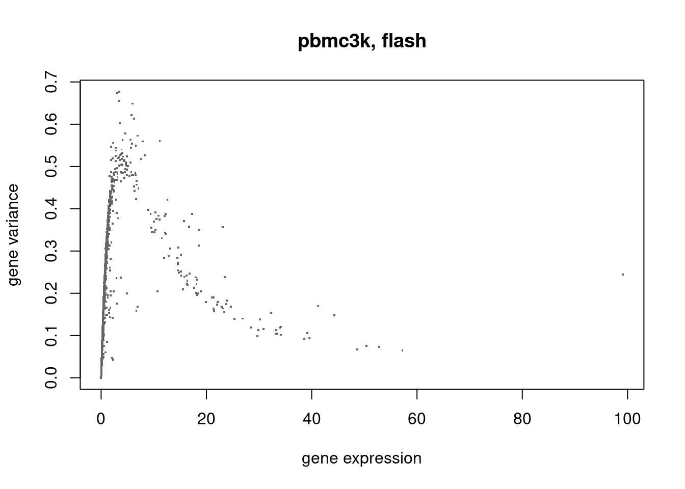
ebpmf_pbmc3k = readRDS('/project2/mstephens/dongyue/poisson_mf/pbmc3k/ebpmf_pbmc3k_vga3.rds')
plot(colSums(counts/c(rowSums(counts)))/colSums(counts)*sum(counts),ebpmf_pbmc3k$sigma2,xlab='gene expression/colsums(geneexpression)',ylab='gene variance',main='pbmc3k, ebpmf, l0 f0',pch='.',cex=2,col='grey40')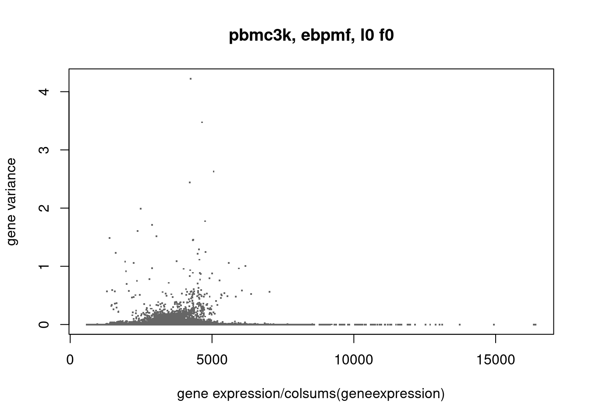
ebpmf_pbmc3k_multinom = readRDS('/project2/mstephens/dongyue/poisson_mf/pbmc3k/ebpmf_pbmc3k_multinom_vga3.rds')
plot(colSums(counts/c(rowSums(counts))),ebpmf_pbmc3k_multinom$sigma2,xlab='gene expression',ylab='gene variance',main='pbmc3k, ebpmf, l0',pch='.',cex=2,col='grey40')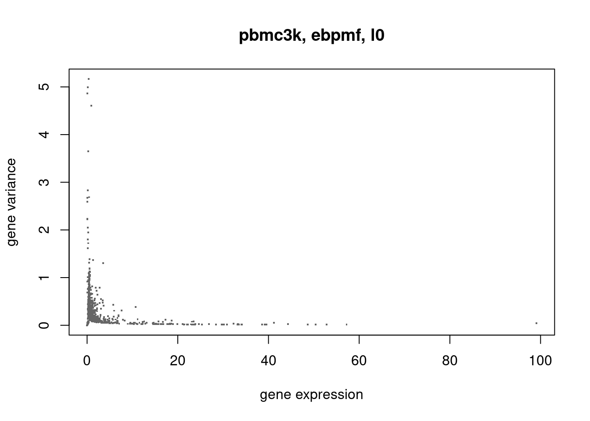
glmpca_pbmc3k_poi = readRDS('/project2/mstephens/dongyue/poisson_mf/pbmc3k/glmpca_pbmc3k_poi.rds')Warning: namespace 'glmpca' is not available and has been replaced
by .GlobalEnv when processing object ''Look at one gene that has highest estimated variance.
l0 = rowMeans(counts)
which.max(ebpmf_pbmc3k_multinom$sigma2)[1] 8589gene_idx = which.max(ebpmf_pbmc3k_multinom$sigma2)
plot(ebpmf_pbmc3k_multinom$sigma2_trace[,gene_idx],type='l',xlab='iteration',ylab='sigma2 trace')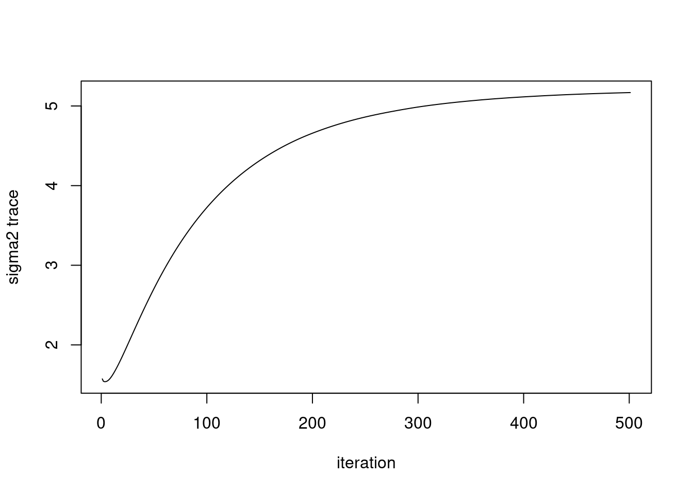
plot(counts[,gene_idx]/l0,ylab='after divided by cell size',xlab='cells',main='ebpmf latent')
lines(exp(ebpmf_pbmc3k_multinom$fit_flash$flash.fit$Y[,gene_idx]))plot((fitted(ebpmf_pbmc3k_multinom$fit_flash)[,gene_idx]),main='ebpmf fitted latent')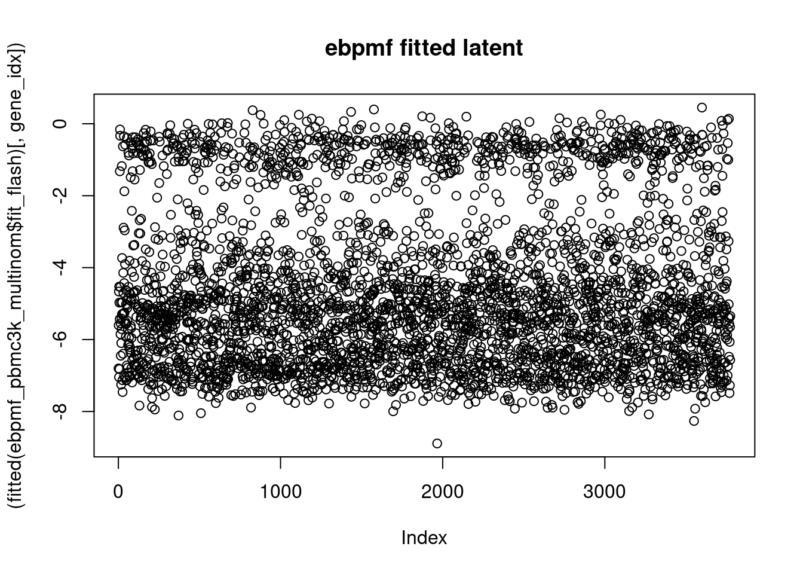
So the m seems to represent the latent space ok, but it seems that the fitted \(LF^t\) are all negative and the sigma2 is large.
I don’t know exactly how to make sense of it right now. If we look at the factors corresponding to this gene:
plot(ebpmf_pbmc3k_multinom$fit_flash$F.pm[gene_idx,])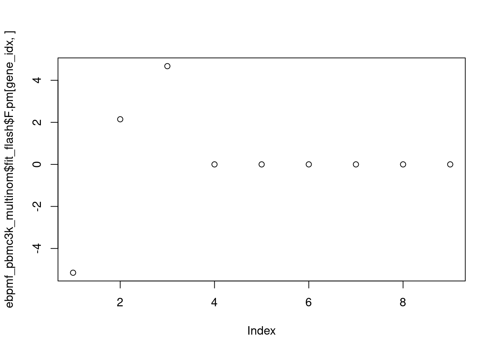
All of them are effectively 0…What is gene’s called?
The glmpca latent is also plotted here for comparison:
plot(counts[,8589]/l0,ylab='after divided by cell size',xlab='cells',main='glmpca latent')
lines(exp(tcrossprod(as.matrix(glmpca_pbmc3k_poi$loadings),as.matrix(glmpca_pbmc3k_poi$factors))[,8589]))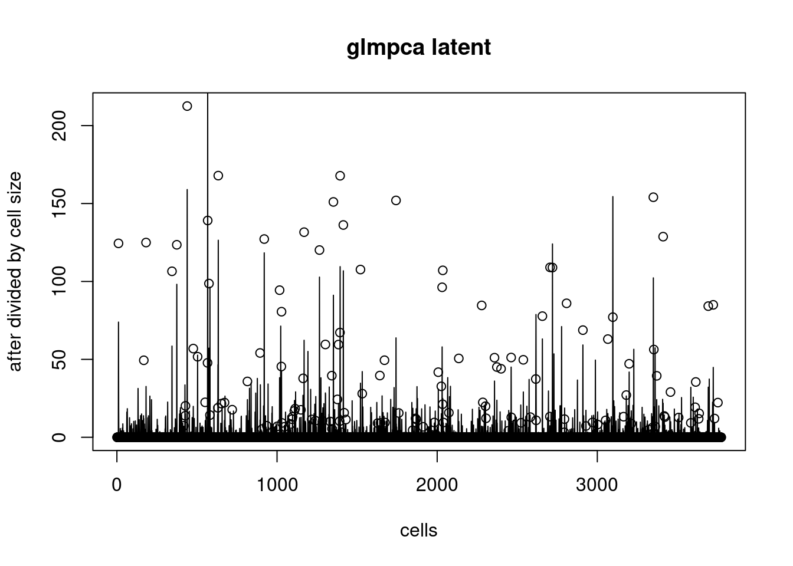
How about fit flash on the latent representation learned by glmpca? Then what’s the relationship between gene expression and the variance?
flash_glmpca = readRDS('/project2/mstephens/dongyue/poisson_mf/pbmc3k/flash_glmpca.rds')
plot(colSums(counts/rowSums(counts)),flash_glmpca$residuals.sd^2,xlab='gene expression',ylab='gene variance',main='pbmc3k, flash fit on glmpca',pch='.',cex=2,col='grey40')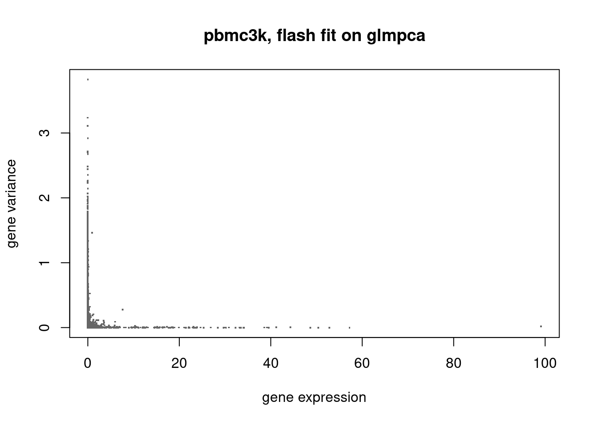
load('/project2/mstephens/pcarbo/git/fastTopics-experiments/data/droplet.RData')
flash_droplet = readRDS('/project2/mstephens/dongyue/poisson_mf/droplet/flash_droplet.rds')
plot(colSums(counts/c(rowSums(counts))),flash_droplet$residuals.sd^2,xlab='gene expression',ylab='gene variance',main='droplet, flash',pch='.',cex=2,col='grey40')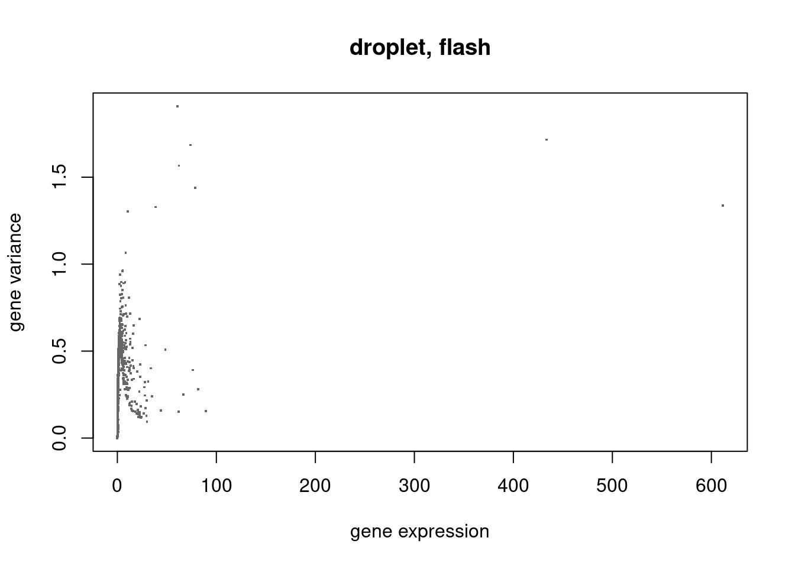
ebpmf_droplet = readRDS('/project2/mstephens/dongyue/poisson_mf/droplet/ebpmf_droplet_vga3.rds')
f0 = colSums(counts)
plot(colSums(counts/rowSums(counts))/f0*sum(counts),ebpmf_droplet$sigma2,xlab='gene expression/colsums(geneexpression)',ylab='gene variance',main='droplet, ebpmf, l0 f0',pch='.',cex=2,col='grey40')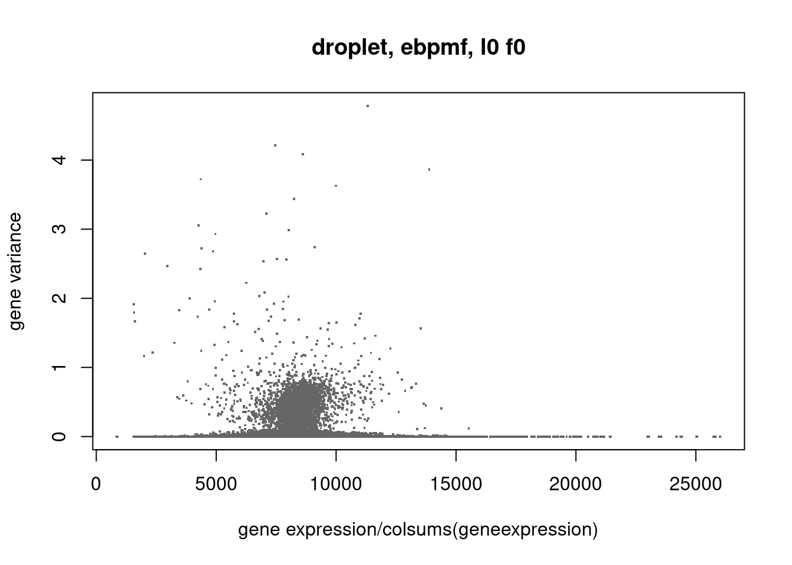
plot(colSums(counts/rowSums(counts)),ebpmf_droplet$sigma2,xlab='gene expression',ylab='gene variance',main='droplet, ebpmf, l0 f0',pch='.',cex=3,col='grey40')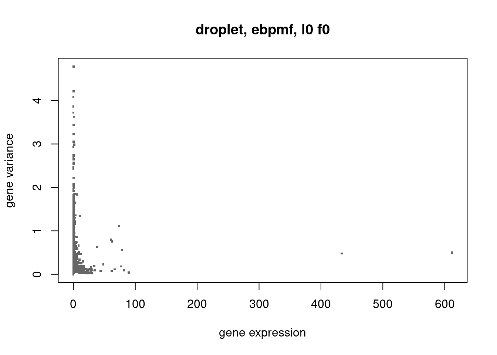
sessionInfo()R version 3.6.1 (2019-07-05)
Platform: x86_64-pc-linux-gnu (64-bit)
Running under: CentOS Linux 7 (Core)
Matrix products: default
BLAS/LAPACK: /software/openblas-0.2.19-el7-x86_64/lib/libopenblas_haswellp-r0.2.19.so
locale:
[1] LC_CTYPE=en_US.UTF-8 LC_NUMERIC=C
[3] LC_TIME=en_US.UTF-8 LC_COLLATE=en_US.UTF-8
[5] LC_MONETARY=en_US.UTF-8 LC_MESSAGES=en_US.UTF-8
[7] LC_PAPER=en_US.UTF-8 LC_NAME=C
[9] LC_ADDRESS=C LC_TELEPHONE=C
[11] LC_MEASUREMENT=en_US.UTF-8 LC_IDENTIFICATION=C
attached base packages:
[1] stats graphics grDevices utils datasets methods base
other attached packages:
[1] Matrix_1.5-3 fastTopics_0.6-100 workflowr_1.6.2
loaded via a namespace (and not attached):
[1] httr_1.4.1 tidyr_1.1.0 splines_3.6.1
[4] jsonlite_1.6 viridisLite_0.3.0 RcppParallel_4.4.3
[7] assertthat_0.2.1 horseshoe_0.2.0 mixsqp_0.3-17
[10] deconvolveR_1.2-1 yaml_2.2.0 progress_1.2.2
[13] ggrepel_0.9.1 ebnm_1.0-9 pillar_1.4.2
[16] lattice_0.20-38 quantreg_5.41 glue_1.3.1
[19] quadprog_1.5-7 digest_0.6.20 promises_1.0.1
[22] colorspace_1.4-1 cowplot_1.1.1 htmltools_0.3.6
[25] httpuv_1.5.1 pkgconfig_2.0.2 invgamma_1.1
[28] SparseM_1.77 purrr_0.3.4 scales_1.1.0
[31] whisker_0.3-2 later_0.8.0 Rtsne_0.15
[34] MatrixModels_0.4-1 git2r_0.26.1 tibble_2.1.3
[37] ggplot2_3.3.5 ashr_2.2-50 pbapply_1.4-0
[40] lazyeval_0.2.2 magrittr_1.5 crayon_1.3.4
[43] mcmc_0.9-6 evaluate_0.14 fs_1.3.1
[46] MASS_7.3-51.4 truncnorm_1.0-8 tools_3.6.1
[49] data.table_1.14.2 prettyunits_1.0.2 softImpute_1.4
[52] hms_0.5.3 lifecycle_0.1.0 stringr_1.4.0
[55] MCMCpack_1.4-5 plotly_4.9.0 trust_0.1-7
[58] munsell_0.5.0 flashier_0.2.32 irlba_2.3.3
[61] compiler_3.6.1 rlang_0.4.10 grid_3.6.1
[64] htmlwidgets_1.3 rmarkdown_1.13 gtable_0.3.0
[67] R6_2.4.0 knitr_1.23 dplyr_0.8.3
[70] uwot_0.1.11 rprojroot_2.0.2 stringi_1.4.3
[73] parallel_3.6.1 SQUAREM_2017.10-1 Rcpp_1.0.5
[76] vctrs_0.3.1 tidyselect_1.1.0 xfun_0.8
[79] coda_0.19-3